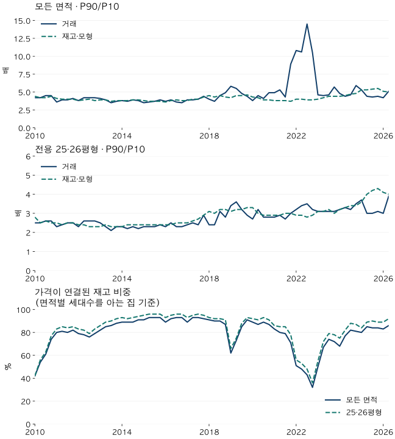

가격의 긴 흐름 · 가격 격차의 분포
서울 아파트 가격 격차: 거래와 재고로 본 2010~2026년 분포
서울 아파트 P90/P10 가격 격차를 거래와 현재 측정 재고의 모형가격으로 비교합니다. 66분기 흐름, 면적·연식 구성, 2022·2025년 확대와 표본 포함률을 함께 확인하세요.
분석 기간 · 2010년 1분기~2026년 2분기 · 서울 | 자료 기준일 · 2026-10-04
서울 아파트 가격의 위아래 간격은 2010년보다 2026년에 넓어졌을까요? 가격의 90번째 백분위수를 10번째 백분위수로 나눈 P90/P10은 거래 기준으로 4.2배에서 5.1배, 현재 측정 재고의 모형가격 기준으로 4.4배에서 5.0배가 됐습니다. 다만 중간 경로는 크게 다릅니다. 팔린 집의 구성이 바뀌는 시기에 거래 분포가 특히 크게 흔들렸습니다.
- 2010년 1분기와 2026년 2분기의 가격 격차는 두 기준 모두 확대됐습니다. 명목 금액 차이와 배율은 다른 지표입니다.
- 거래 배율의 가장 큰 전년 대비 확대는 2022년 3분기였습니다. 작은 면적의 거래 비중 증가가 동반됐습니다.
- 재고 모형의 가장 큰 전년 대비 확대는 2025년 1분기였습니다. 양쪽 시점에서 같은 주택 집합만 남겨도 확대됐습니다.
- 재고 기준은 현재 측정 세대수를 과거 가격에 적용한 비교입니다. 당시 서울의 실제 전체 재고나 가구 자산 불평등을 측정한 값이 아닙니다.
상위·하위 집단의 평균 대신, 두 가격 경계를 비교합니다
집을 가격이 낮은 순서대로 놓았을 때 누적 비중이 처음 10%에 이르는 가격을 P10, 50%를 P50, 90%를 P90이라고 하겠습니다. P50은 이 방식으로 구한 중앙값입니다. P90/P10은 두 경계 가격의 배율이고, P90−P10은 두 경계 사이의 금액 차이입니다. 같은 가격의 집이 많으면 경계에 해당하는 집의 비중이 정확히 10%로 나뉘지 않을 수 있습니다.
이는 KB가 설명하는 5분위 배율, 즉 상위 20% 평균가격을 하위 20% 평균가격으로 나눈 지표와 다릅니다. 두 지표를 같은 이름으로 비교하거나 이 글의 값을 KB 공표 수치라고 읽으면 안 됩니다.
거래 기준에서는 계약 한 건이 한 표입니다. 재고 기준에서는 같은 단지·전용평형의 모형가격에 측정 세대수를 가중합니다. 거래되지 않은 집도 포함할 수 있지만, 면적별 세대수를 알 수 있고 해당 시점에 가격을 추정할 근거가 있는 집만 들어갑니다. 전체 서울 아파트를 빠짐없이 센 것은 아닙니다.
처음과 끝의 배율은 커졌지만, 같은 경로를 지나지 않았습니다
| 기간·기준 | P10 / P50 / P90 | P90/P10 | P90−P10 | 알려진 재고 포함률 |
|---|---|---|---|---|
| 2010Q1 거래 기준 | 2.2 / 3.9 / 9.2 | 4.2 | 7.0 | 해당 없음 |
| 2010Q1 현재 측정 재고·모형 기준 | 2.2 / 4.3 / 10.0 | 4.4 | 7.7 | 42% |
| 2026Q2 거래 기준 | 4.7 / 9.6 / 24.0 | 5.1 | 19.3 | 해당 없음 |
| 2026Q2 현재 측정 재고·모형 기준 | 5.9 / 12.7 / 29.6 | 5.0 | 23.7 | 86% |
거래 기준의 P10과 P90 사이 금액 차이는 7.0억 원에서 19.3억 원으로 늘었습니다. 재고 모형 기준은 7.7억 원에서 23.7억 원입니다. 모두 물가를 빼지 않은 명목 금액입니다. 두 가격이 같은 비율로 오르면 배율은 그대로여도 금액 차이는 커질 수 있으므로 두 열을 함께 읽어야 합니다.

면적 차이를 줄이기 위해 84형(전용 25·26평형)만 따로 비교하면, 2010년 1분기→2026년 2분기 배율은 거래 2.5→3.9배, 재고 모형 2.8→4.0배입니다. 84형은 전용면적을 평으로 바꿔 반올림한 블로그 표준 면적 묶음입니다. 공급평형이나 84㎡ 이상 85㎡ 미만의 좁은 면적 범위와는 다릅니다.
재고 기준의 포함률도 시점에 따라 변합니다. 모든 면적에서 2010년 1분기 42%, 2022년 3분기 43%, 2026년 2분기 86%입니다. 관측된 거래와 다른 대상을 보는 데다, 모형가격이 연결되는 재고 집합 자체도 바뀝니다. 두 선의 차이를 거래가격과 ‘진짜 집값’의 차이라고 단정할 수 없습니다.
2022년 거래 배율 급등에는 작은 면적의 거래 증가가 동반됐습니다
모든 면적을 합친 거래 배율의 전년 동분기 대비 증가가 가장 컸던 구간은 2021년 3분기 4.3배→2022년 3분기 14.5배입니다. P90은 18.5억 원에서 19.5억 원, P10은 4.3억 원에서 1.3억 원으로 바뀌었습니다. 비싼 쪽의 경계가 오른 것뿐 아니라 싼 쪽의 경계가 크게 내려간 것이 함께 작용했습니다.
그때 전용 18평형 이하의 거래 비중은 약 45%에서 55%로 늘었습니다. 강남·서초·송파의 거래 비중도 약 14%에서 18%로 늘었습니다. 싼 집과 비싼 집이 거래 분포의 서로 다른 쪽을 바꿀 수 있습니다. 아래는 해당 두 분기 전체 거래의 구성입니다.
| 구성 | 2021Q3 | 2022Q3 |
|---|---|---|
| 전용 18평형 이하 | 45% | 55% |
| 전용 19~25평형 | 11% | 9% |
| 전용 26~34평형 | 33% | 25% |
| 전용 35평형 이상 | 11% | 10% |
| 연식 0~5년 | 12% | 14% |
| 연식 6~19년 | 40% | 48% |
| 연식 20년 이상 | 48% | 38% |
| 강남·서초·송파 | 14% | 18% |
| 나머지 서울 | 86% | 82% |
84형만 보면 같은 기간 거래 배율은 2.7→3.5배로, 모든 면적의 급등과 크기가 다릅니다. 해제·직거래를 제외하는 엄격 정제로 바꿔도 2022년 3분기 전체 면적의 배율은 15.2배였습니다. 따라서 이 결과를 해제·직거래 포함만의 문제로 설명할 수는 없습니다.
같은 단지·전용평형이 양쪽 분기에 각각 세 번 이상 거래된 경우만 남기는 비교도 검토했습니다. 하지만 남은 표본의 가격 양끝을 충분히 다양한 단지가 구성하지 못해 배율을 제시하지 않습니다. 거래 비중 변화는 확인했지만, 그것이 격차 확대의 몇 퍼센트를 ‘일으켰다’는 인과 분해까지 한 것은 아닙니다.
재고 모형의 2025년 확대는 같은 주택 집합에서도 나타났습니다
재고 모형의 전년 동분기 대비 배율 증가가 가장 컸던 구간은 2024년 1분기→2025년 1분기입니다. 모든 면적의 배율은 4.4→5.3배였습니다. 가격을 연결한 알려진 재고 비중은 68%에서 80%로 늘었으므로, 새로 비교에 들어온 집의 영향을 의심해 볼 수 있습니다.
| 구성 | 2024Q1 | 2025Q1 |
|---|---|---|
| 전용 18평형 이하 | 37% | 36% |
| 전용 19~25평형 | 9% | 9% |
| 전용 26~34평형 | 45% | 43% |
| 전용 35평형 이상 | 10% | 12% |
| 연식 0~5년 | 11% | 8% |
| 연식 6~19년 | 31% | 31% |
| 연식 20년 이상 | 58% | 61% |
| 강남·서초·송파 | 20% | 22% |
| 나머지 서울 | 80% | 78% |
양쪽 시점 모두 모형가격이 있고 측정 세대수도 같은 단지·면적 집합만 남겨도 배율은 4.4→5.3배였습니다. 이 공통 집합은 각 시점 대표 재고의 약 92%와 78%입니다. 이 구간의 확대를 표본 진입만으로 설명하기는 어렵습니다. 다만 품질 변화나 모형 오차를 완전히 제거한 동일주택 실거래 지수는 아닙니다.
이 1년의 공통 집합과 66분기 내내 유지된 집합은 다릅니다. 전체 기간 내내 가격이 연결된 재고는 작았고, 상위 가격 꼬리에 10개 단지가 남지 않았습니다. 전체 기간 고정 집합의 가격·배율은 모두 미제시로 남겼습니다. 이 표본으로 전체 기간의 변화를 일반화하기 어렵습니다.
전체 분기에서 배율·가격 경계·포함률을 함께 읽으세요
가격과 금액 차이는 0.1억 원, 배율은 0.1배, 비중은 정수 %로 각각 반올림했습니다. 표시된 가격끼리 나누거나 빼면 표시 배율·차이와 조금 다를 수 있습니다. 반올림 전 값을 각각 계산했기 때문입니다. 표의 0%도 원래 비중이 정확히 0이라는 뜻은 아닙니다.
모든 면적 · 66분기 전체 표
| 분기 | 거래 P10/P50/P90 | 거래 배율 | 거래 금액 차 | 재고 P10/P50/P90 | 재고 배율 | 재고 금액 차 | 알려진 재고 포함률 | 대표 재고 중 다른 면적 가격 활용 |
|---|---|---|---|---|---|---|---|---|
| 2010Q1 | 2.2 / 3.9 / 9.2 | 4.2 | 7.0 | 2.2 / 4.3 / 10.0 | 4.4 | 7.7 | 42% | 14% |
| 2010Q2 | 2.0 / 3.6 / 8.3 | 4.2 | 6.3 | 2.2 / 4.1 / 9.1 | 4.2 | 6.9 | 54% | 11% |
| 2010Q3 | 2.0 / 3.8 / 9.0 | 4.5 | 7.0 | 2.1 / 4.1 / 9.0 | 4.2 | 6.9 | 61% | 8% |
| 2010Q4 | 2.1 / 4.1 / 9.5 | 4.5 | 7.4 | 2.2 / 4.2 / 9.6 | 4.4 | 7.4 | 74% | 6% |
| 2011Q1 | 2.2 / 3.8 / 7.9 | 3.6 | 5.7 | 2.3 / 4.2 / 9.5 | 4.1 | 7.2 | 80% | 6% |
| 2011Q2 | 2.1 / 3.7 / 8.1 | 3.9 | 6.0 | 2.3 / 4.2 / 9.1 | 4.0 | 6.8 | 81% | 5% |
| 2011Q3 | 2.1 / 3.6 / 7.9 | 3.9 | 5.9 | 2.3 / 4.1 / 9.1 | 4.0 | 6.8 | 80% | 5% |
| 2011Q4 | 2.1 / 3.8 / 8.4 | 4.1 | 6.3 | 2.2 / 4.1 / 8.9 | 4.0 | 6.7 | 82% | 5% |
| 2012Q1 | 2.0 / 3.5 / 7.5 | 3.8 | 5.5 | 2.2 / 4.0 / 8.5 | 3.8 | 6.3 | 79% | 5% |
| 2012Q2 | 2.0 / 3.6 / 8.2 | 4.2 | 6.3 | 2.2 / 4.0 / 8.6 | 3.9 | 6.4 | 78% | 4% |
| 2012Q3 | 1.9 / 3.5 / 7.9 | 4.2 | 6.0 | 2.1 / 3.9 / 8.5 | 4.0 | 6.4 | 76% | 4% |
| 2012Q4 | 2.0 / 3.7 / 8.2 | 4.2 | 6.2 | 2.1 / 3.8 / 8.1 | 3.8 | 6.0 | 79% | 4% |
| 2013Q1 | 2.0 / 3.7 / 8.3 | 4.1 | 6.3 | 2.2 / 3.9 / 8.4 | 3.9 | 6.3 | 82% | 4% |
| 2013Q2 | 2.0 / 3.6 / 7.8 | 3.9 | 5.8 | 2.2 / 3.9 / 8.4 | 3.9 | 6.2 | 85% | 4% |
| 2013Q3 | 2.0 / 3.5 / 6.9 | 3.5 | 4.9 | 2.2 / 3.9 / 8.2 | 3.7 | 6.0 | 86% | 4% |
| 2013Q4 | 2.1 / 3.8 / 7.8 | 3.7 | 5.7 | 2.2 / 3.9 / 8.3 | 3.8 | 6.1 | 88% | 4% |
| 2014Q1 | 2.1 / 3.8 / 8.0 | 3.8 | 5.9 | 2.3 / 4.0 / 8.6 | 3.8 | 6.4 | 89% | 4% |
| 2014Q2 | 2.0 / 3.7 / 7.6 | 3.7 | 5.6 | 2.3 / 4.0 / 8.5 | 3.8 | 6.3 | 89% | 4% |
| 2014Q3 | 2.1 / 3.8 / 8.1 | 3.9 | 6.0 | 2.3 / 4.1 / 8.8 | 3.9 | 6.5 | 89% | 5% |
| 2014Q4 | 2.1 / 3.8 / 7.9 | 3.8 | 5.8 | 2.3 / 4.1 / 8.9 | 3.9 | 6.6 | 91% | 5% |
| 2015Q1 | 2.2 / 3.9 / 7.7 | 3.5 | 5.5 | 2.4 / 4.2 / 9.0 | 3.8 | 6.6 | 91% | 5% |
| 2015Q2 | 2.2 / 4.0 / 8.0 | 3.6 | 5.8 | 2.4 / 4.3 / 9.1 | 3.7 | 6.7 | 93% | 5% |
| 2015Q3 | 2.2 / 4.0 / 8.1 | 3.7 | 5.9 | 2.5 / 4.5 / 9.3 | 3.7 | 6.8 | 93% | 5% |
| 2015Q4 | 2.3 / 4.3 / 9.0 | 3.9 | 6.7 | 2.6 / 4.5 / 9.6 | 3.7 | 7.0 | 93% | 5% |
| 2016Q1 | 2.2 / 4.1 / 8.2 | 3.7 | 6.0 | 2.6 / 4.5 / 9.3 | 3.6 | 6.8 | 89% | 4% |
| 2016Q2 | 2.4 / 4.5 / 9.5 | 3.9 | 7.1 | 2.6 / 4.7 / 9.9 | 3.8 | 7.3 | 92% | 5% |
| 2016Q3 | 2.6 / 4.6 / 9.3 | 3.6 | 6.8 | 2.8 / 4.8 / 10.7 | 3.9 | 8.0 | 93% | 5% |
| 2016Q4 | 2.6 / 4.7 / 9.0 | 3.5 | 6.5 | 2.8 / 5.0 / 10.7 | 3.8 | 7.9 | 93% | 5% |
| 2017Q1 | 2.5 / 4.6 / 9.6 | 3.9 | 7.2 | 2.8 / 5.0 / 10.8 | 3.8 | 8.0 | 89% | 4% |
| 2017Q2 | 2.7 / 5.0 / 10.6 | 3.9 | 7.9 | 2.9 / 5.1 / 11.6 | 4.0 | 8.7 | 93% | 5% |
| 2017Q3 | 2.8 / 5.1 / 11.1 | 4.0 | 8.3 | 3.0 / 5.4 / 12.1 | 4.0 | 9.0 | 93% | 5% |
| 2017Q4 | 3.0 / 5.7 / 13.0 | 4.4 | 10.0 | 3.0 / 5.5 / 13.0 | 4.3 | 9.9 | 92% | 5% |
| 2018Q1 | 2.9 / 5.3 / 11.5 | 4.0 | 8.7 | 3.1 / 5.9 / 14.0 | 4.5 | 10.9 | 91% | 5% |
| 2018Q2 | 2.7 / 5.0 / 10.0 | 3.7 | 7.2 | 3.2 / 6.0 / 13.7 | 4.3 | 10.6 | 90% | 4% |
| 2018Q3 | 2.9 / 5.7 / 13.2 | 4.5 | 10.3 | 3.4 / 6.6 / 15.3 | 4.5 | 11.9 | 90% | 4% |
| 2018Q4 | 2.5 / 4.9 / 12.0 | 4.9 | 9.5 | 3.5 / 6.8 / 15.1 | 4.3 | 11.5 | 87% | 3% |
| 2019Q1 | 2.3 / 4.9 / 13.3 | 5.8 | 11.0 | 3.4 / 6.5 / 14.3 | 4.2 | 10.9 | 62% | 3% |
| 2019Q2 | 3.0 / 6.7 / 16.5 | 5.5 | 13.5 | 3.5 / 6.9 / 15.8 | 4.5 | 12.3 | 73% | 4% |
| 2019Q3 | 3.3 / 6.9 / 16.0 | 4.8 | 12.7 | 3.7 / 7.2 / 16.7 | 4.5 | 13.0 | 85% | 4% |
| 2019Q4 | 3.4 / 6.9 / 15.0 | 4.4 | 11.6 | 3.8 / 7.6 / 17.6 | 4.6 | 13.8 | 91% | 5% |
| 2020Q1 | 3.0 / 5.9 / 11.3 | 3.8 | 8.3 | 4.0 / 8.0 / 17.4 | 4.3 | 13.4 | 89% | 5% |
| 2020Q2 | 3.4 / 7.0 / 15.2 | 4.5 | 11.9 | 4.2 / 8.2 / 17.6 | 4.2 | 13.4 | 87% | 5% |
| 2020Q3 | 3.7 / 7.8 / 15.1 | 4.1 | 11.4 | 4.7 / 8.9 / 18.6 | 3.9 | 13.9 | 89% | 5% |
| 2020Q4 | 3.7 / 8.4 / 18.0 | 4.9 | 14.3 | 5.2 / 9.5 / 20.0 | 3.9 | 14.8 | 87% | 4% |
| 2021Q1 | 3.7 / 8.2 / 18.0 | 4.9 | 14.3 | 5.5 / 10.1 / 20.8 | 3.8 | 15.3 | 83% | 4% |
| 2021Q2 | 3.5 / 8.1 / 18.5 | 5.3 | 15.0 | 5.8 / 10.5 / 22.0 | 3.8 | 16.2 | 80% | 4% |
| 2021Q3 | 4.3 / 9.0 / 18.5 | 4.3 | 14.2 | 6.1 / 11.1 / 23.2 | 3.8 | 17.1 | 79% | 4% |
| 2021Q4 | 2.3 / 8.7 / 20.0 | 8.9 | 17.8 | 6.3 / 11.3 / 23.3 | 3.7 | 17.0 | 71% | 3% |
| 2022Q1 | 1.8 / 7.2 / 19.5 | 10.8 | 17.7 | 6.1 / 11.2 / 24.1 | 4.0 | 18.0 | 51% | 3% |
| 2022Q2 | 2.1 / 8.5 / 22.3 | 10.6 | 20.2 | 6.0 / 11.1 / 24.0 | 4.0 | 18.1 | 48% | 3% |
| 2022Q3 | 1.3 / 6.8 / 19.5 | 14.5 | 18.2 | 5.8 / 10.7 / 22.9 | 3.9 | 17.0 | 43% | 3% |
| 2022Q4 | 1.7 / 7.2 / 17.9 | 10.5 | 16.2 | 5.2 / 9.8 / 20.6 | 3.9 | 15.4 | 32% | 4% |
| 2023Q1 | 3.9 / 8.3 / 18.0 | 4.6 | 14.1 | 5.0 / 9.2 / 20.2 | 4.0 | 15.2 | 50% | 5% |
| 2023Q2 | 4.4 / 9.0 / 19.8 | 4.5 | 15.4 | 5.1 / 9.3 / 21.4 | 4.2 | 16.2 | 67% | 5% |
| 2023Q3 | 4.5 / 9.1 / 20.6 | 4.6 | 16.1 | 5.1 / 9.8 / 22.5 | 4.4 | 17.4 | 74% | 5% |
| 2023Q4 | 3.5 / 8.2 / 19.9 | 5.7 | 16.4 | 5.2 / 9.7 / 22.8 | 4.4 | 17.7 | 72% | 4% |
| 2024Q1 | 4.2 / 8.9 / 20.0 | 4.8 | 15.8 | 5.0 / 9.6 / 22.3 | 4.4 | 17.3 | 68% | 5% |
| 2024Q2 | 4.9 / 10.0 / 21.5 | 4.4 | 16.6 | 5.1 / 9.8 / 22.9 | 4.5 | 17.8 | 77% | 5% |
| 2024Q3 | 5.0 / 10.0 / 23.0 | 4.6 | 18.1 | 5.3 / 10.3 / 24.9 | 4.7 | 19.7 | 82% | 5% |
| 2024Q4 | 4.1 / 9.3 / 24.0 | 5.9 | 19.9 | 5.2 / 10.4 / 25.2 | 4.8 | 20.0 | 81% | 4% |
| 2025Q1 | 5.1 / 11.4 / 27.0 | 5.3 | 21.9 | 5.2 / 10.7 / 27.4 | 5.3 | 22.2 | 80% | 5% |
| 2025Q2 | 5.0 / 10.4 / 21.6 | 4.4 | 16.7 | 5.3 / 10.9 / 28.2 | 5.3 | 22.9 | 85% | 5% |
| 2025Q3 | 4.7 / 10.0 / 20.0 | 4.3 | 15.3 | 5.4 / 11.0 / 29.0 | 5.4 | 23.6 | 84% | 5% |
| 2025Q4 | 5.0 / 10.0 / 22.0 | 4.4 | 17.0 | 5.5 / 11.6 / 30.2 | 5.5 | 24.7 | 84% | 5% |
| 2026Q1 | 4.6 / 9.0 / 19.3 | 4.2 | 14.7 | 5.7 / 12.1 / 29.3 | 5.1 | 23.6 | 83% | 4% |
| 2026Q2 | 4.7 / 9.6 / 24.0 | 5.1 | 19.3 | 5.9 / 12.7 / 29.6 | 5.0 | 23.7 | 86% | 5% |
84형 · 66분기 전체 표
| 분기 | 거래 P10/P50/P90 | 거래 배율 | 거래 금액 차 | 재고 P10/P50/P90 | 재고 배율 | 재고 금액 차 | 알려진 재고 포함률 | 대표 재고 중 다른 면적 가격 활용 |
|---|---|---|---|---|---|---|---|---|
| 2010Q1 | 3.1 / 4.4 / 7.6 | 2.5 | 4.5 | 3.5 / 5.0 / 9.8 | 2.8 | 6.4 | 42% | 6% |
| 2010Q2 | 3.0 / 4.1 / 7.4 | 2.5 | 4.5 | 3.3 / 4.7 / 8.4 | 2.5 | 5.1 | 56% | 5% |
| 2010Q3 | 2.9 / 4.2 / 7.7 | 2.6 | 4.7 | 3.2 / 4.6 / 8.5 | 2.6 | 5.2 | 63% | 3% |
| 2010Q4 | 3.1 / 4.5 / 8.0 | 2.6 | 4.9 | 3.2 / 4.6 / 8.2 | 2.5 | 5.0 | 77% | 2% |
| 2011Q1 | 3.1 / 4.3 / 7.2 | 2.3 | 4.1 | 3.3 / 4.6 / 8.2 | 2.5 | 4.9 | 83% | 1% |
| 2011Q2 | 3.0 / 4.2 / 7.1 | 2.4 | 4.1 | 3.3 / 4.6 / 8.0 | 2.4 | 4.7 | 85% | 1% |
| 2011Q3 | 3.0 / 4.2 / 7.5 | 2.5 | 4.5 | 3.2 / 4.6 / 8.0 | 2.5 | 4.7 | 84% | 1% |
| 2011Q4 | 3.0 / 4.2 / 7.5 | 2.5 | 4.5 | 3.2 / 4.4 / 7.9 | 2.5 | 4.7 | 85% | 1% |
| 2012Q1 | 3.0 / 4.1 / 6.7 | 2.3 | 3.8 | 3.2 / 4.4 / 7.5 | 2.4 | 4.3 | 83% | 1% |
| 2012Q2 | 2.9 / 4.1 / 7.5 | 2.6 | 4.6 | 3.1 / 4.4 / 7.4 | 2.4 | 4.3 | 82% | 0% |
| 2012Q3 | 2.8 / 4.0 / 7.3 | 2.6 | 4.5 | 3.1 / 4.3 / 7.2 | 2.3 | 4.1 | 79% | 1% |
| 2012Q4 | 2.9 / 4.1 / 7.4 | 2.6 | 4.5 | 3.0 / 4.2 / 6.9 | 2.3 | 3.9 | 83% | 1% |
| 2013Q1 | 2.9 / 4.1 / 7.3 | 2.5 | 4.4 | 3.0 / 4.1 / 7.1 | 2.3 | 4.1 | 86% | 0% |
| 2013Q2 | 2.9 / 4.0 / 6.7 | 2.3 | 3.8 | 3.0 / 4.2 / 7.1 | 2.4 | 4.1 | 89% | 0% |
| 2013Q3 | 2.9 / 4.0 / 6.2 | 2.1 | 3.3 | 3.0 / 4.2 / 7.1 | 2.3 | 4.1 | 90% | 0% |
| 2013Q4 | 3.0 / 4.1 / 6.9 | 2.3 | 3.9 | 3.1 / 4.2 / 7.2 | 2.3 | 4.1 | 92% | 0% |
| 2014Q1 | 3.0 / 4.2 / 6.8 | 2.3 | 3.8 | 3.1 / 4.3 / 7.3 | 2.3 | 4.2 | 93% | 0% |
| 2014Q2 | 3.0 / 4.1 / 6.6 | 2.2 | 3.6 | 3.1 / 4.3 / 7.4 | 2.4 | 4.3 | 92% | 0% |
| 2014Q3 | 3.0 / 4.2 / 7.0 | 2.3 | 4.0 | 3.1 / 4.4 / 7.5 | 2.4 | 4.3 | 93% | 1% |
| 2014Q4 | 3.1 / 4.3 / 6.8 | 2.2 | 3.8 | 3.2 / 4.4 / 7.7 | 2.4 | 4.5 | 94% | 1% |
| 2015Q1 | 3.1 / 4.3 / 7.0 | 2.3 | 3.9 | 3.2 / 4.5 / 7.8 | 2.4 | 4.5 | 95% | 0% |
| 2015Q2 | 3.1 / 4.4 / 7.1 | 2.3 | 4.0 | 3.3 / 4.6 / 7.9 | 2.4 | 4.6 | 96% | 0% |
| 2015Q3 | 3.2 / 4.5 / 7.3 | 2.3 | 4.1 | 3.4 / 4.8 / 8.2 | 2.4 | 4.8 | 96% | 0% |
| 2015Q4 | 3.3 / 4.7 / 7.9 | 2.4 | 4.6 | 3.4 / 4.8 / 8.3 | 2.4 | 4.8 | 96% | 0% |
| 2016Q1 | 3.2 / 4.5 / 7.3 | 2.3 | 4.0 | 3.5 / 4.8 / 8.4 | 2.4 | 4.9 | 93% | 0% |
| 2016Q2 | 3.4 / 4.9 / 8.7 | 2.5 | 5.2 | 3.5 / 4.9 / 8.6 | 2.4 | 5.1 | 95% | 0% |
| 2016Q3 | 3.5 / 5.0 / 8.1 | 2.3 | 4.6 | 3.6 / 5.1 / 9.0 | 2.5 | 5.4 | 96% | 0% |
| 2016Q4 | 3.5 / 5.0 / 8.0 | 2.3 | 4.5 | 3.7 / 5.2 / 9.1 | 2.5 | 5.4 | 96% | 0% |
| 2017Q1 | 3.5 / 5.0 / 8.5 | 2.4 | 5.0 | 3.7 / 5.3 / 9.1 | 2.5 | 5.4 | 93% | 0% |
| 2017Q2 | 3.7 / 5.4 / 9.2 | 2.5 | 5.5 | 3.8 / 5.4 / 9.7 | 2.6 | 5.9 | 95% | 0% |
| 2017Q3 | 3.7 / 5.5 / 9.0 | 2.4 | 5.3 | 3.9 / 5.7 / 10.2 | 2.7 | 6.4 | 96% | 0% |
| 2017Q4 | 4.0 / 6.0 / 11.5 | 2.9 | 7.5 | 3.9 / 5.8 / 11.5 | 2.9 | 7.5 | 95% | 0% |
| 2018Q1 | 3.9 / 5.6 / 9.5 | 2.4 | 5.6 | 4.0 / 6.2 / 12.4 | 3.1 | 8.4 | 93% | 0% |
| 2018Q2 | 3.7 / 5.4 / 9.0 | 2.4 | 5.3 | 4.0 / 6.4 / 12.2 | 3.0 | 8.1 | 92% | 0% |
| 2018Q3 | 3.8 / 6.3 / 12.1 | 3.1 | 8.2 | 4.3 / 7.1 / 13.7 | 3.2 | 9.4 | 92% | 0% |
| 2018Q4 | 3.8 / 5.8 / 10.5 | 2.8 | 6.8 | 4.4 / 7.3 / 13.9 | 3.2 | 9.5 | 91% | 0% |
| 2019Q1 | 3.7 / 6.0 / 12.7 | 3.4 | 9.0 | 4.4 / 7.1 / 13.7 | 3.1 | 9.3 | 66% | 0% |
| 2019Q2 | 4.3 / 7.7 / 15.5 | 3.6 | 11.2 | 4.7 / 7.4 / 15.0 | 3.2 | 10.3 | 75% | 0% |
| 2019Q3 | 4.6 / 7.8 / 14.8 | 3.2 | 10.2 | 4.8 / 7.6 / 15.6 | 3.2 | 10.8 | 88% | 0% |
| 2019Q4 | 4.8 / 7.6 / 14.0 | 2.9 | 9.2 | 5.0 / 8.1 / 16.6 | 3.3 | 11.6 | 93% | 0% |
| 2020Q1 | 4.4 / 6.7 / 11.7 | 2.7 | 7.3 | 5.2 / 8.5 / 17.2 | 3.3 | 12.0 | 92% | 0% |
| 2020Q2 | 4.7 / 7.9 / 15.0 | 3.2 | 10.3 | 5.4 / 8.7 / 16.4 | 3.0 | 11.0 | 91% | 0% |
| 2020Q3 | 5.4 / 8.7 / 15.0 | 2.8 | 9.6 | 5.9 / 9.5 / 17.4 | 2.9 | 11.5 | 93% | 0% |
| 2020Q4 | 6.0 / 9.5 / 16.8 | 2.8 | 10.8 | 6.5 / 10.3 / 19.1 | 2.9 | 12.6 | 91% | 1% |
| 2021Q1 | 6.0 / 9.6 / 17.0 | 2.8 | 11.0 | 7.0 / 10.9 / 20.0 | 2.9 | 13.0 | 86% | 0% |
| 2021Q2 | 6.3 / 9.8 / 18.0 | 2.9 | 11.7 | 7.2 / 11.5 / 21.3 | 2.9 | 14.1 | 85% | 0% |
| 2021Q3 | 6.8 / 10.6 / 18.5 | 2.7 | 11.8 | 7.6 / 12.1 / 22.7 | 3.0 | 15.1 | 85% | 1% |
| 2021Q4 | 6.7 / 11.0 / 20.4 | 3.0 | 13.7 | 7.8 / 12.5 / 23.1 | 3.0 | 15.4 | 78% | 0% |
| 2022Q1 | 6.5 / 10.8 / 20.5 | 3.2 | 14.0 | 8.1 / 12.8 / 23.5 | 2.9 | 15.5 | 56% | 0% |
| 2022Q2 | 6.5 / 10.7 / 22.1 | 3.4 | 15.6 | 7.9 / 12.7 / 23.1 | 2.9 | 15.2 | 53% | 0% |
| 2022Q3 | 6.0 / 10.0 / 20.7 | 3.5 | 14.7 | 7.8 / 12.4 / 21.8 | 2.8 | 14.0 | 48% | 0% |
| 2022Q4 | 6.0 / 9.9 / 19.0 | 3.2 | 13.0 | 7.0 / 10.9 / 20.5 | 2.9 | 13.4 | 36% | 1% |
| 2023Q1 | 6.0 / 10.0 / 18.5 | 3.1 | 12.5 | 6.5 / 10.6 / 20.2 | 3.1 | 13.7 | 55% | 1% |
| 2023Q2 | 6.3 / 10.6 / 19.5 | 3.1 | 13.2 | 6.6 / 10.6 / 20.6 | 3.1 | 14.0 | 72% | 0% |
| 2023Q3 | 6.4 / 10.6 / 20.0 | 3.1 | 13.6 | 6.7 / 10.8 / 21.8 | 3.2 | 15.1 | 79% | 1% |
| 2023Q4 | 6.0 / 9.8 / 18.7 | 3.1 | 12.7 | 6.7 / 10.7 / 20.1 | 3.0 | 13.3 | 78% | 1% |
| 2024Q1 | 6.0 / 10.3 / 19.6 | 3.2 | 13.6 | 6.6 / 10.6 / 21.3 | 3.2 | 14.7 | 75% | 1% |
| 2024Q2 | 6.6 / 11.6 / 21.5 | 3.3 | 14.9 | 6.6 / 10.8 / 21.8 | 3.3 | 15.2 | 82% | 0% |
| 2024Q3 | 6.8 / 11.4 / 21.8 | 3.2 | 15.0 | 6.9 / 11.2 / 23.2 | 3.4 | 16.3 | 88% | 0% |
| 2024Q4 | 6.5 / 11.0 / 22.8 | 3.5 | 16.3 | 6.9 / 11.2 / 23.6 | 3.4 | 16.7 | 87% | 0% |
| 2025Q1 | 7.1 / 13.0 / 26.0 | 3.7 | 18.9 | 6.9 / 11.8 / 25.1 | 3.6 | 18.2 | 84% | 0% |
| 2025Q2 | 7.0 / 12.2 / 20.9 | 3.0 | 13.9 | 6.9 / 11.9 / 27.2 | 4.0 | 20.3 | 89% | 0% |
| 2025Q3 | 6.8 / 11.7 / 20.5 | 3.0 | 13.7 | 6.9 / 12.1 / 29.0 | 4.2 | 22.0 | 90% | 0% |
| 2025Q4 | 7.0 / 11.7 / 21.2 | 3.1 | 14.3 | 7.0 / 12.7 / 29.9 | 4.3 | 22.9 | 89% | 0% |
| 2026Q1 | 6.4 / 10.0 / 19.1 | 3.0 | 12.7 | 7.1 / 13.2 / 29.3 | 4.1 | 22.2 | 89% | 0% |
| 2026Q2 | 6.3 / 11.2 / 24.8 | 3.9 | 18.5 | 7.2 / 13.6 / 29.1 | 4.0 | 21.9 | 92% | 0% |
‘다른 면적 가격 활용’은 해당 면적의 관측 근거가 부족할 때 같은 단지의 다른 면적에서 가격 정보를 가져온 모형 추정입니다. 별도 표본 기준을 통과한 경우만 포함합니다. 2026년 2분기 모든 면적의 대표 재고 중 약 5%가 이 방식이었습니다. 모형 기준을 실제 계약가격이라고 부르지 않는 이유이기도 합니다.
2022년 이후 엄격 정제 비교 · 모든 면적
| 분기 | 긴 시계열 거래 기준 | 엄격 정제 거래 기준 | 엄격 정제 P10/P50/P90 |
|---|---|---|---|
| 2022Q1 | 10.8 | 10.0 | 2.1 / 8.0 / 20.5 |
| 2022Q2 | 10.6 | 9.0 | 2.5 / 8.7 / 22.5 |
| 2022Q3 | 14.5 | 15.2 | 1.4 / 7.2 / 20.5 |
| 2022Q4 | 10.5 | 9.8 | 1.9 / 8.0 / 18.6 |
| 2023Q1 | 4.6 | 4.5 | 4.0 / 8.5 / 18.0 |
| 2023Q2 | 4.5 | 4.3 | 4.7 / 9.2 / 20.0 |
| 2023Q3 | 4.6 | 4.3 | 4.8 / 9.3 / 20.8 |
| 2023Q4 | 5.7 | 5.1 | 4.0 / 8.5 / 20.1 |
| 2024Q1 | 4.8 | 4.7 | 4.3 / 9.0 / 20.2 |
| 2024Q2 | 4.4 | 4.4 | 5.0 / 10.2 / 21.8 |
| 2024Q3 | 4.6 | 4.6 | 5.0 / 10.0 / 23.0 |
| 2024Q4 | 5.9 | 5.6 | 4.4 / 9.6 / 24.7 |
| 2025Q1 | 5.3 | 5.3 | 5.1 / 11.5 / 27.1 |
| 2025Q2 | 4.4 | 4.2 | 5.1 / 10.5 / 21.5 |
| 2025Q3 | 4.3 | 4.0 | 5.0 / 10.2 / 20.0 |
| 2025Q4 | 4.4 | 4.2 | 5.2 / 10.3 / 22.0 |
| 2026Q1 | 4.2 | 4.1 | 4.7 / 9.0 / 19.2 |
| 2026Q2 | 5.1 | 5.1 | 4.8 / 9.8 / 24.3 |
2022년 이후 엄격 정제 비교 · 84형
| 분기 | 긴 시계열 거래 기준 | 엄격 정제 거래 기준 | 엄격 정제 P10/P50/P90 |
|---|---|---|---|
| 2022Q1 | 3.2 | 3.1 | 6.7 / 11.0 / 21.0 |
| 2022Q2 | 3.4 | 3.2 | 6.8 / 10.8 / 22.0 |
| 2022Q3 | 3.5 | 3.4 | 6.2 / 10.3 / 20.9 |
| 2022Q4 | 3.2 | 3.2 | 6.1 / 10.0 / 19.5 |
| 2023Q1 | 3.1 | 3.1 | 6.1 / 10.1 / 18.8 |
| 2023Q2 | 3.1 | 3.0 | 6.5 / 10.8 / 19.5 |
| 2023Q3 | 3.1 | 3.1 | 6.5 / 10.7 / 20.3 |
| 2023Q4 | 3.1 | 3.2 | 6.0 / 9.9 / 19.0 |
| 2024Q1 | 3.2 | 3.2 | 6.2 / 10.5 / 19.7 |
| 2024Q2 | 3.3 | 3.3 | 6.7 / 11.8 / 21.8 |
| 2024Q3 | 3.2 | 3.2 | 6.9 / 11.5 / 21.8 |
| 2024Q4 | 3.5 | 3.5 | 6.5 / 11.2 / 22.9 |
| 2025Q1 | 3.7 | 3.6 | 7.2 / 13.2 / 26.1 |
| 2025Q2 | 3.0 | 3.0 | 7.0 / 12.2 / 20.9 |
| 2025Q3 | 3.0 | 3.0 | 6.9 / 11.8 / 20.5 |
| 2025Q4 | 3.1 | 3.0 | 7.0 / 11.8 / 21.2 |
| 2026Q1 | 3.0 | 2.9 | 6.5 / 10.1 / 19.2 |
| 2026Q2 | 3.9 | 3.9 | 6.4 / 11.3 / 25.0 |
가격 격차 기사를 읽을 때 확인할 순서
- 분위 경계의 배율인지, 상·하위 집단 평균의 배율인지 확인합니다.
- 거래된 집의 분포인지, 시세 표본인지, 세대수를 가중한 재고 분포인지 확인합니다.
- 같은 면적에서도 벌어졌는지, 비교에 들어온 집과 포함률이 바뀌었는지 봅니다.
- 배율과 명목 금액 차이를 구분합니다. 지역 분포의 확대를 개인 자산 격차나 내 집의 수익률로 옮겨 읽지 않습니다.
자료·산식·한계 자세히 보기
모집단과 시간
현재 지역 기준 서울 25구의 2010년 1분기~2026년 2분기, 총 66개 완결 분기입니다. 관측은 분기 전체 매매 계약, 재고 모형은 분기말 마지막 완결 목요일의 가격입니다. 보유 자료 구축일은 2026-10-04이며 과거 그 시점에 알려진 정보만으로 재현한 분석은 아닙니다. 국토교통부 매매 실거래 자료, 공동주택관리정보시스템 K-apt의 면적별 세대수 등을 연결한 자체 분석입니다.
긴 시계열은 해제·직거래를 포함하는 일정한 정제 기준을 쓰고 토지임대부를 제외했습니다. 초기에 해당 항목이 공시되지 않았다는 사실을 확인된 정상 거래로 해석하지 않습니다. 2022년 이후 엄격 정제를 별도로 제시하며 중간부터 주 시계열의 정제 정책을 바꾸지 않았습니다. 정제 규칙과 가격 차이를 함께 읽어도 좋습니다.
재고 가중치와 결측
측정된 정확 전용면적별 세대수를 단지 내 표준 면적으로 묶어 각 면적의 모형가격에 가중했습니다. 다른 면적의 가격을 쓰는 경우에도 세대수를 임의 배분하지 않습니다. 현재 측정된 세대수를 과거에도 적용하고, 알려진 준공연도보다 이전인 시점에서는 제외했습니다. 면적별 세대수를 모르는 집은 포함률의 분모에서도 빠져 있습니다. 따라서 이 비중은 전체 서울 주택의 조사 포함률이 아닙니다.
재고 모형의 제외 사유에는 가격 근거 없음·유효하지 않은 값·오래된 근거·초기 추정 상태·부족한 관측 근거가 있습니다. 가격을 추정할 수 있는 주택 집합이 시점별로 바뀌며, 알려진 재고와 가격이 있는 재고를 같은 분모로 취급하지 않았습니다.
분위수와 표본 기준
가격순 누적 가중치가 전체의 10%·50%·90%에 처음 도달하는 실제 가격을 사용했습니다. 두 이웃 가격을 보간하지 않습니다. 거래는 최소 40건·10단지, 재고는 100세대·10단지와 최대 단지 비중 20% 이하를 요구했습니다. 또한 P10 이하와 P90 이상의 꼬리에 각각 최소 10건 또는 10세대와 10단지가 있어야 가격·배율을 제시했습니다.
확대 시기는 각 기준에서 모든 면적의 전년 동분기 대비 P90/P10 증가가 가장 큰 분기로 정했습니다. 연식은 계약 또는 가격 기준 연도에서 현재 단지의 준공연도를 뺀 값입니다. 미상·미래 연식도 구성 비중의 분모에 남겼으나 해당 작은 범주의 값은 공개하지 않습니다. 구성 표는 반올림 때문에 합계가 100%와 다를 수 있습니다.
거래 공통 집합은 양쪽 분기에 각각 3건 이상인 같은 단지·표준 면적이며, 집합이 같아도 계약수 가중치는 바뀔 수 있습니다. 재고 공통 집합은 양끝에서 모형가격을 쓸 수 있는 같은 단지·면적과 동일 측정 세대수를 사용합니다. 모형의 품질·관측 근거 차이까지 제거했다는 뜻은 아닙니다.
공개 근거와 작성
432개 기간·면적·기준 행의 공개 근거 JSON에는 비교 기준을 충족한 300개 행과 미제시 132개 행을 함께 남겼습니다. 개별 계약·단지 식별자·정확 거래건수·정확 세대수·가중치는 포함하지 않습니다.
분석·집필: 파파펭귄 (Nobot Kang). 에이전트로 자료 대조·계산·초안 작성을 보조했습니다. 원자료와 정제한 거래, 재고 연결과 모형가격의 상태를 확인하고, 누적 가중치를 따로 계산해 분위수를 대조했습니다. 이 글의 숫자는 자체 분석이며 국토교통부나 KB의 공표 통계가 아닙니다.